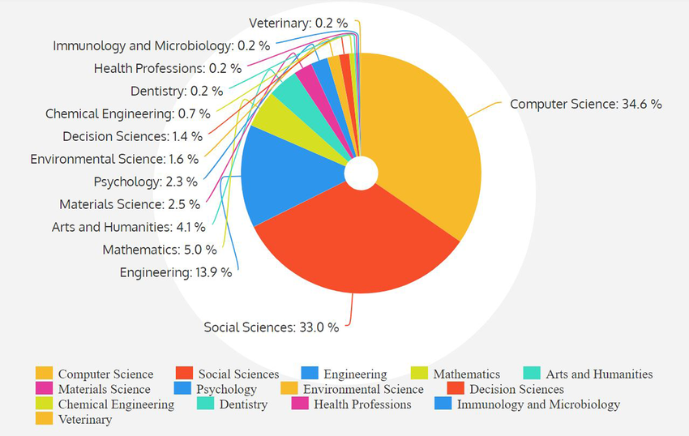
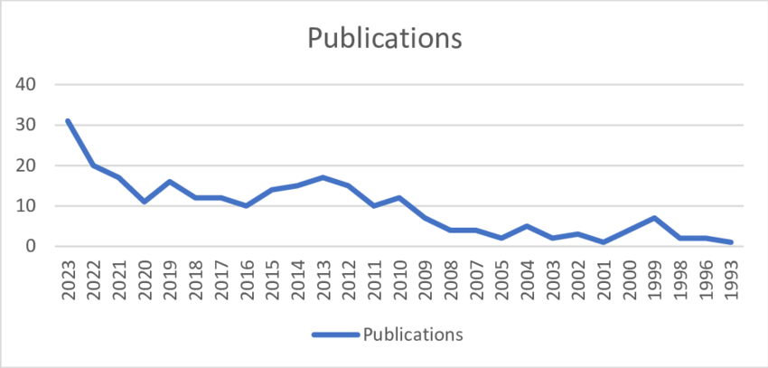

Visualization Rules and Tips
Rules & Tips for Creating Great Graphs
Good graphs are not just all about aesthetics — they are first and foremost powerful tools of data representation that, if done well, can take your publication to a higher level. Clear, well-designed figures help readers understand your data quickly, avoid misinterpretation, and build trust in your results. The following rules and tips highlight essential principles that improve clarity, accuracy, and readability in scientific data visualization.
1. Always label your axes (with units)
Axis labels are essential for interpretation. Without units and clear labels, the reader cannot understand what is being measured or compared.
2. Use readable fonts and appropriate font sizes
Text in your graph should be legible without zooming in. Avoid overly decorative fonts and ensure that labels, ticks, and captions are easy to read.
3. Choose color palettes carefully
Use colors that are visually distinct, easy on the eyes, and accessible to color-blind readers. Avoid colors that clash or convey unintended emphasis.
4. Choose the right type of plot for your data
Different data types require different visual representations. Select the graph type that most truthfully and clearly communicates your message, rather than the one that looks most impressive.
5. Include a clear and informative caption
A good caption explains what the graph shows, how the data were generated, and any relevant statistical or methodological details. The reader should understand the figure without referring back to the main text.
6. Provide a clear legend when needed
If your graph uses colors, symbols, or multiple data series, include a legend directly on the graph when possible. If space is limited, ensure the legend is clearly explained in the caption.
7. Titles are optional, clarity is not
Graph titles can be useful but are not mandatory if the caption and labels provide sufficient context. Avoid redundant or overly long titles.
8. Avoid overloading your graph
More information does not always mean better communication. Remove unnecessary elements, reduce clutter, and focus on the key message you want the reader to take away.
QUIZ
Graph Critique Challenge
Welcome to the Graph Critique Challenge, where it is now your turn to become a reviewer and evaluate how well presented figures were made.
Your task is to identify any mistakes made by the designers and then suggest possible improvements that could be applied to help transform those graphs into model examples worthy the best publications.
At the end, you can compare your answers by clicking "Reveal Answer" to see how many rules and tips you remembered.
Are you ready? Then set and… GO!
1. Graph One

Graph 1 Caption: The pie chart showing number of publications produced according to the subject area
2. Graph Two

Graph 2 Caption: publications by year